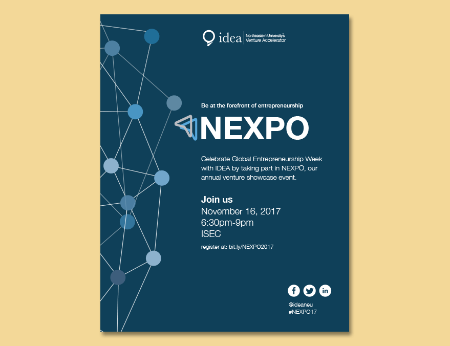

Branding and print design for NEXPO Convention.
As part of Scout, I worked with IDEA, Northeastern's student-led venture accelerator, to create awareness of their organization as well as create all material for this year's NEXPO. NEXPO is Northeastern's Entrepreneurship Expo, where ventures who have worked with IDEA are showcased. The event is for students, mentors, inventors, and anyone in the area who is interested, so it was important our designs be inclusive for all of them.
We first started at looking at what had been done before. This year's NEXPO was in a new location and bigger than ever before. IDEA asked that we make sure we did something new to relay that fact. Below are the initial ideas our team developed.


 Of those four prototypes, the fourth one was the favorite. From there, I further developed the concept to be approved. In order to give the pattern more depth, we added the pattern again, at a lower opacity and in a different position. The colors of the arrows were changed as well based on the clients feedback. Below is our finished theme...
Of those four prototypes, the fourth one was the favorite. From there, I further developed the concept to be approved. In order to give the pattern more depth, we added the pattern again, at a lower opacity and in a different position. The colors of the arrows were changed as well based on the clients feedback. Below is our finished theme...
 The next step was to create all the print material that was needed for the event. I designed small, 4" x 4" cards, various flyers, directional signage, and the event booklet. The final version can be seen below...
The next step was to create all the print material that was needed for the event. I designed small, 4" x 4" cards, various flyers, directional signage, and the event booklet. The final version can be seen below...


We first started at looking at what had been done before. This year's NEXPO was in a new location and bigger than ever before. IDEA asked that we make sure we did something new to relay that fact. Below are the initial ideas our team developed.
The next step was to create all the print material that was needed for the event. I designed small, 4" x 4" cards, various flyers, directional signage, and the event booklet. The final version can be seen below...
These small cards made a large impact. Handed out throughout the week leading up to NEXPO, they included only the important information someone interested would need.

In order to promote the event on campus and at nearby popular areas, flyers were hung up. Three different slogans were used in order to reach different audiences.
In order to guide attendees to the new location for NEXPO, wayfinding signs were placed around campus. When deciding what signs to make and where, we chose to have people get to a landmark (Ruggles Station) and then guide them to the building. These are a few of the signs we developed as well as a picture of one on Columbus Ave.
When attendees entered the building, these booklets were handed to them. The booklets contained all of the ventures present, information about the organizations involved and information to reach out to IDEA if you were now interested in joining.